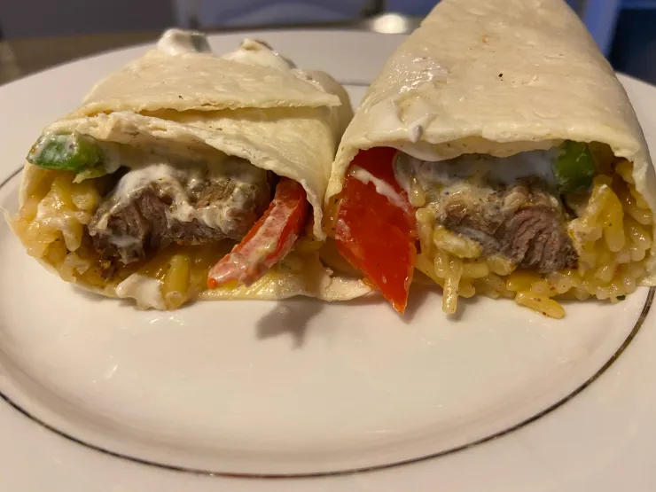

Odin Recipes: Steak Fajita Burrito
Odin Recipes Homepage

The steak fajita burrito is a Mexican dish!
The steak fajita burrito is a type of burrito. The Burrito is a Mexican dish
that was invented in Northern Mexico. It is made of meat, rice, beans, guacaomle sauce, tomatoes,
lettuces, onions, and sour cream, all wrapped in a corn or flour tortilla.
The burrito's ingredients comes from Indigienous cultures in Mexico, along with Spanish ingredients
brought over to Mexico during the Spanish colinization of Mexico. The burrito is one of the most popular
Mexican dishes, along with Tacos, Quesadillas, Enchiladas, Tamales, Pozole, Chiles en nogada, and
Flautas just to name a few.
Ingredients for Steak Fajita Burrito:
- Mexican Large Corn Tortillas.
- Spanish Rice.
- Guacamole Sauce.
- Mexican Beans (Frijoles).
- Steak Meat.
- Asada Sauce/Seasoning.
- Sour Cream.
- Taco Seasoning.
- Non-Spicy Bell Peppers
- Lettuce.
- Tomatoes.
- Mexican Green Sauce (If you want to).
How to prepare Steak Fajita Burrito
- Use a non-stick pan.
- Cook the steak in the pan until is fully done.
- Use another pan, Mix all the other ingredients inside of pan, except for tortilla, sour cream, Mexican green sauce, and guacamole
sauce.
- Mix ingredients in bowl.
- Put large corn tortilla in oven until it is warm.
- Apply sour cream and guacamole sauce to bowl with the steak and other mixed-together ingredients.
- Lay warmed tortilla on serving plate, and put the mixed ingrients in the center of the tortilla.
- Roll the tortilla with the mixed ingedients inside, it should be a cylinder shape.
- Take to the table, and enjoy! (Put Mexican green sauce on if you want extra flavor).